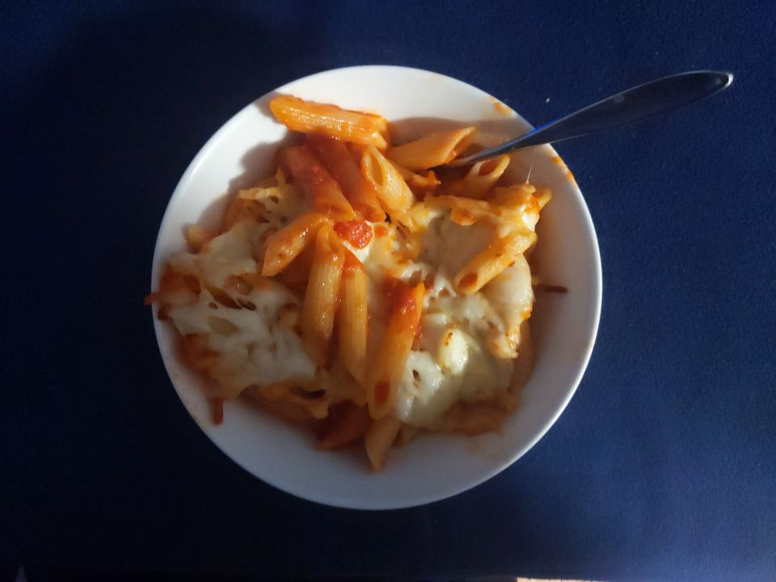
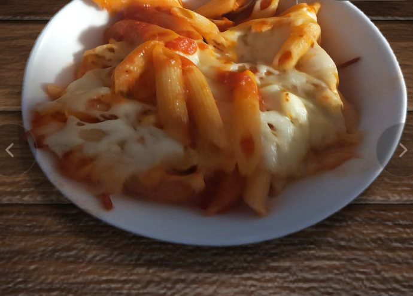
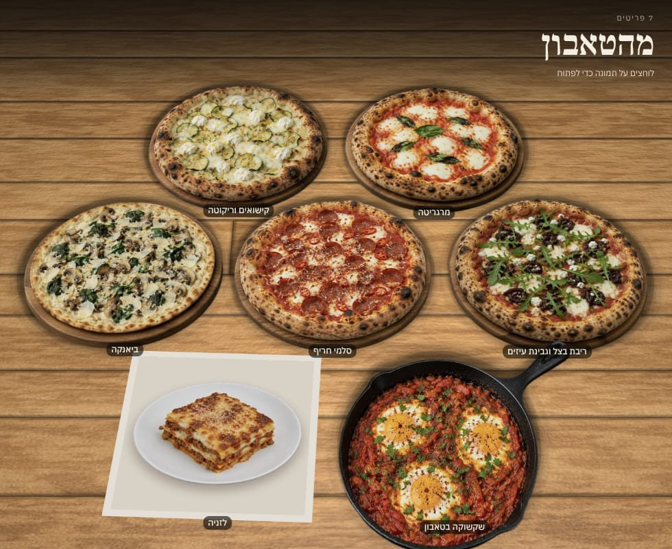

צילום אמיתי ממאגר פתוח, והתוצאה כפי שיצאה, בלי תיקונים. זה תבליט: יש עומק ואפשר להטות, אי אפשר לסובב מסביב.

בתמונה: תפריט הדגמה, תמונות להמחשה.
מה כן: מצלמים כל מנה פעם אחת, והסועדים רואים אותה על השולחן.
לפיילוט של מנה: תפריט שרואים בו את האוכל, מתמונה אחת לכל מנה. חינם ל־30 יום מהפרסום הראשון, ואנחנו מלווים אתכם אישית.
halom.io/mana · או כתבו לנו "מנה"